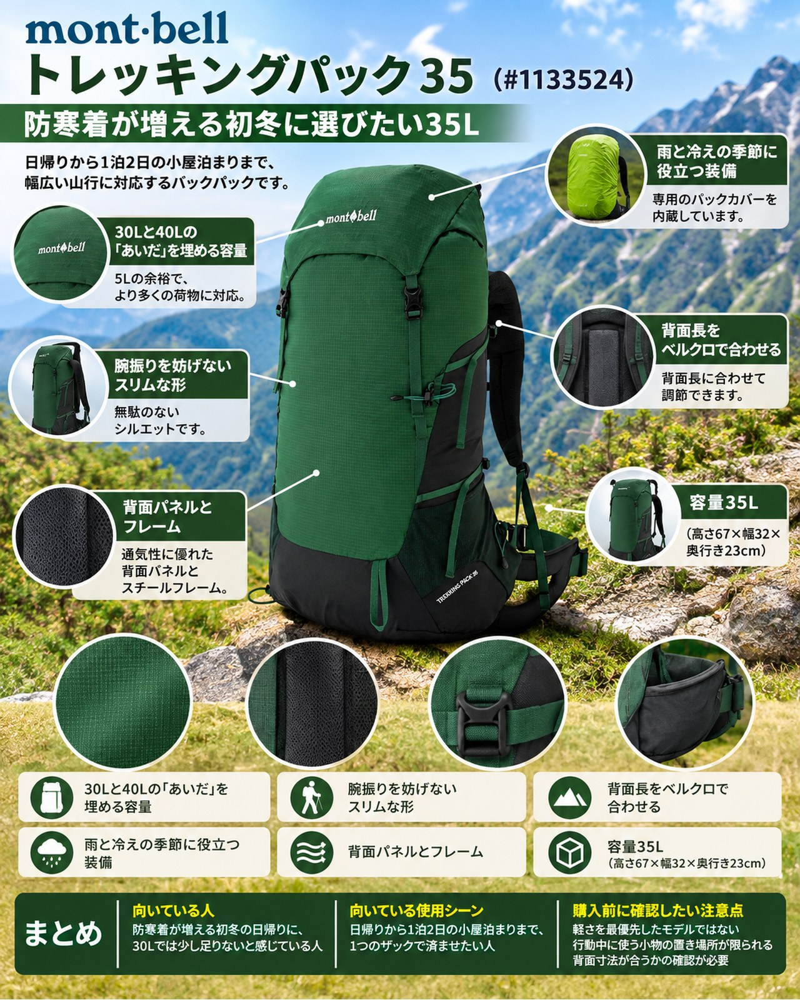

今週は9日（月）の冷たい雨と高所の雪のあと、11〜13日に晴れ間が戻る予報です。北アルプスの山小屋は営業を終え、上高地も15日に閉山を迎えます。一方、近郊の低山は紅葉の見頃に入り、高尾山は15日ごろが見頃とされています。街の気温は10〜20℃と寒暖差が大きく、晴れた日でも山頂や朝夕は冷えます。ダウンやフリース、手袋、雨具と、日帰りでも荷物がかさむ季節です。そんな初冬の山行準備に紹介したいのが、モンベルの「トレッキングパック 35」（品番#1133524）です。YAMA FITでは以前、同じシリーズの女性用「トレッキングパック 30 Women's」を、パックカバー内蔵という雨への強さを中心に紹介しました。今回はユニセックスの35Lを取り上げ、「30・35・40のどれを選ぶか」という容量選びの視点で見ていきます。防寒着が増える時期の日帰りから、1泊2日の小屋泊まりまで1つで済ませたい人に向いています。
基本スペック
※価格・仕様は2026年11月9日時点のモンベル公式オンラインショップの表示です。
| 項目 | 内容 |
|---|---|
| 商品名 | トレッキングパック 35 |
| 品番 | #1133524 |
| 容量 | 35L（高さ67×幅32×奥行き23cm） |
| 重量 | 1.19kg |
| 本体 | 100デニール・バリスティック®ナイロン・リップストップ［ウレタン・コーティング］ |
| 底部 | 210デニール・バリスティック®ナイロン・リップストップ［ウレタン・コーティング］ |
| 背面 | 3Dメッシュ |
| 背面寸法 | 49〜57cm（ベルクロで調節） |
| カラー | ブラック、ダークグリーン、オレンジ |
| 価格 | 20,000円（税込） |
30Lと40Lの「あいだ」を埋める容量
30Lとの差は重量10g・価格500円で、5Lの余裕を持てます。同じシリーズの30・35・40を比べると、次のようになります。
30から35への差は重量10g、価格500円です。背面寸法の調節範囲（49〜57cm）は3モデルとも同じです。初冬は夏より荷物が増えますが、40Lまでは要らないという人にとって、35Lは重さと価格をほとんど増やさずに余裕を持てるサイズです。日帰りのトレッキングや1泊2日の小屋泊まり登山を想定した中型パックです。
| モデル | 容量（寸法） | 重量 | 価格（税込） |
|---|---|---|---|
| トレッキングパック 30 | 30L（62×32×21cm） | 1.18kg | 19,500円 |
| トレッキングパック 35 | 35L（67×32×23cm） | 1.19kg | 20,000円 |
| トレッキングパック 40 | 40L（68×33×25cm） | 1.24kg | 20,500円 |
腕振りを妨げないスリムな形
腕振りを妨げないスリムなシルエットです。幅は32cmで30Lと同じです。容量の差は主に高さと奥行きで生まれていて、横に張り出さない形のまま荷物を増やせます。
背面長をベルクロで合わせる
ショルダーハーネスの取り付け位置をスライドさせ、背面クッションの上端を背面長に合わせてベルクロで固定する方式です。背面長の目安はS：〜51cm、M：51〜55cm、L：55cm〜と示されています。厚着をする季節でも、背負う人に合わせて位置を決め直せます。
雨と冷えの季節に役立つ装備
専用のパックカバーを内蔵し、ショルダーハーネスのホックに固定して背面側に雨が入りにくい作りです。上部はデルタリッド（雨蓋）で、隠しポケットもあります。両サイドはストレッチメッシュの2ウェイサイドポケットで、2方向から出し入れできます。
背面パネルとフレーム
保水しにくく通気性に優れたエアスルーバックパネルと、調節不要のスチールフレームを内蔵しています。ピッケルやトレッキングポールはフック付きコードで固定でき、岩場でポールを一時的に留めるポールループもあります。モンベルのトレールウォーターパックにも対応します。
デメリット・注意点
- 軽さを最優先したモデルではない：35Lで1.19kgです。スチールフレームを内蔵した作りで、軽量化を最優先する人には別の選択肢があります。
- 行動中に使う小物の置き場所が限られる：ヒップベルトのポケットや本体前面からの開口についての記載はありません。行動食や手袋は、サイドポケットや雨蓋の隠しポケットにまとめる工夫が必要です。
- 背面寸法が合うかの確認が必要：調節範囲は49〜57cmです。小柄な人は、女性用モデル（背面長の目安が短めに設定されています）も比べてみましょう。
向いている人・向いていない人
◎向いている人
- 防寒着が増える初冬の日帰りに、30Lでは少し足りないと感じている人
- 日帰りから1泊2日の小屋泊まりまで、1つのザックで済ませたい人
- ザックカバーを別に持ち歩かず、急な雨に備えたい人
△向いていない人
- ザックの軽さを最優先したい人
- ヒップベルトのポケットなど、歩きながら使える収納を重視する人
まとめ
トレッキングパック 35は、30Lとほぼ同じ重さと価格で5Lの余裕を持てる、シンプルな中型ザックです。パックカバー内蔵、背面長の調節、スチールフレームと必要な機能をそろえ、防寒着がかさむ初冬の日帰りから小屋泊まりまで使えます。晴れ間の戻る週の中ごろ、紅葉の低山へ出かける準備に、ザックの容量を見直してみてください。
この記事で紹介した商品
価格・重量・在庫は各ブランド公式サイトの記載（確認日つき）にもとづきます。商品を押すと、購入先を選べます。
この記事にはアフィリエイト広告が含まれます。リンク先での購入により、当サイトが報酬を受け取る場合があります。山行の前には、最新の気象とルートの状況を必ずご確認ください。